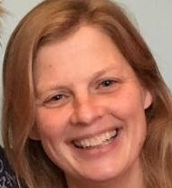
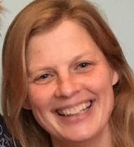
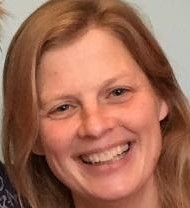

Interprofessioneel opleiden in de ouderengeneeskunde (IPO)

Anna van Daalen, coördinator onderwijs basismodule SOOL Tamara Wanner, coördinator onderwijs verdiepingsfase SOOL, Annemarie Moll-Jongerius, adjunct-hoofd SOOL
Als SOOL zetten we ons in om elk jaar het onderwijs voor aios te verbeteren, te innoveren en zo goed mogelijk te laten aansluiten op de dagelijkse praktijk. We bieden hierdoor een gevarieerd en leerzaam programma waarmee we aios willen opleiden tot goede specialisten ouderengeneeskunde. Niet alleen is er een groeiende behoefte aan specialisten ouderengeneeskunde, ook steeds meer basisartsen zijn geïnteresseerd in de opleiding. Dit resulteerde het afgelopen jaar in het groeien van de opleiding. Een groeiende organisatie vraagt om nieuwe werkwijzen en geeft uitdagingen voor de organisatie van het onderwijs.
Maken, geven en organiseren van onderwijs is een dynamisch proces waarbij onze docenten, onderwijscoördinatoren en onderwijskundige nauw samenwerken. De praktijk van de ouderengeneeskunde is continue aan veranderingen onderhevig. Onze docenten, die tevens in de praktijk werken, verweven deze ontwikkelingen in het onderwijs dat zij geven. Daarnaast wordt er vanuit de lokale curriculum commissie, waarin onder andere aios, jonge klaren, opleiders en een patiëntvertegenwoordiger plaatshebben, advies gegeven aan de onderwijs coördinatoren. Landelijk neemt elk onderwijsinstituut deel aan de landelijke curriculum commissie van waaruit het onderwijs tussen de verschillende instituten op elkaar wordt afgestemd en er geleerd wordt van elkaar. Viermaal per jaar komen we als staf van SOOL bij elkaar voor teambinding en didactische scholing. Het merendeel van onze docenten heeft daarnaast ook de Landelijk Educatie Docenten (LED) gevolgd. Tevens krijgt interprofessioneel opleiden steeds meer vorm zodat we de verbinding en samenwerking met andere specialismen kunnen versterken. Door al deze mogelijkheden bouwen we met elkaar aan kwalitatief goed onderwijs.
In het afgelopen jaar hebben we door de Corona pandemie een lange periode alleen online onderwijs kunnen geven aan onze aios. Hierdoor hebben we veel ervaring opgedaan met de vele online mogelijkheden die er zijn en is dit een vast onderdeel geworden tijdens de terugkomdagen. Naast de positieve kanten ervaarden we ook dat online contact, over een wat langere periode, nadelige gevolgen had. Tijdens de terugkomdagen staan het delen van ervaringen en leren van elkaar centraal. De verbinding met elkaar is belangrijk voor het welbevinden van aios. Gedurende de periode van het online werken bleek dat het delen van ervaringen lastiger werd en viel de verbinding voor een groot deel weg. Om deze redenen vinden we het als SOOL belangrijk om het overgrote deel van de terugkomdagen fysiek te blijven organiseren. Waar het online onderwijs geven voordelen biedt, hebben we dit behouden.
De aios evaluaties van het onderwijs waren in 2021 positief, zowel wat betreft de inhoud als de didactische vaardigheden. Dit houden we vast in het nieuwe jaar en hopen dat aios ook in 2022 veel zullen leren voor hun ontwikkeling als specialist ouderengeneeskunde.
Interprofessioneel opleiden in de ouderengeneeskunde (IPO)
Paula Broersen, onderwijskundige SOOL dr. Tony Poot, huisarts, PHEG
Het afgelopen jaar is er planmatig doorgewerkt aan het optimaliseren en borgen van interprofessionele opleidingsinitiatieven vanuit SOOL.
Waarschijnlijk is de meest bemoedigende constatering dat, naast het planmatig werken aan dit dossier, het thema zodanig is gaan leven dat het bijna ondoenlijk is geworden om alle voorbeelden van interprofessionele samenwerking in de opleiding, die spontaan ontstaan zijn, te benoemen en te volgen.
Afgelopen jaar sloten we het IPO jaarbericht af met de zin, ‘Steeds is duidelijk dat hoewel interprofessioneel werken en opleiden breed gedragen idealen zijn er ook een te overwinnen belangenconflict bestaat tussen discipline specifieke en interprofessionele leerdoelen en activiteiten binnen de beperkende context van alle opleidingen.’ Hoewel dit mechanisme nog merkbaar is en logischerwijze bestaat concluderen we dat het interprofessionele denken zijn eigen plaats verworven heeft.
Naast deze zeer positieve constatering is er nog altijd werk aan de winkel om interprofessionaliteit in de opleiding vorm te geven en te borgen. Een voorbeeld dat dit lukt is dat de online transitie cursus ouderengeneeskunde weer een aantal keren doorlopen is door gemengde groepen AIOS SO, HA, AVG en interne en aan de hand van de evaluaties steeds verder verbeterd wordt. Deze blended leeractiviteit, met deels online en fysieke bijeenkomsten, krijgt steeds meer een vaste plek binnen de verschillende opleidingen.
Het ingebed en ‘normaal’ worden van interprofessionele opleidingsinitiatieven wordt sterk geholpen door het feit dat de huisartsopleiding en SOOL de handen ineen geslagen hebben om gezamenlijk IPO onderwijs uit te gaan rollen. Een vervolgstap is dat er door gebouwd kan worden naar alle andere opleidingen die professionals leveren die van belang zijn voor ouderen met complexe hulpvragen.
We sluiten dan ook dit jaarbericht af met de constatering dat interprofessioneel samenwerken in de ouderengeneeskunde een waardevol doel is en dat het vertalen hiervan naar de opleidingen een inspirerende uitdaging is die we in Leiden met plezier op blijven pakken.
Herziening communicatielijn: de specialist ouderengeneeskunde
versterken in al haar rollen
Met de komst van een nieuw landelijk opleidingsplan werken we binnen SOOL gelijk op aan de herziening van de communicatielijn. Hierbij gaan we goed aansluiten bij dat wat de aios vooral moeten leren. Denk daarbij aan het opbouwen van effectieve behandelrelaties, een sterke regievoering van de SO in alle gremia en een krachtige schakelfunctie eerste en tweede lijn.
In het eerste jaar worden veel communicatietechnieken aangereikt die de aios daar binnen de verpleeghuissetting bij kunnen helpen. Er is veel aandacht voor de inhoudelijke regie over de behandeling van de patiënt en het kunnen aansturen van een team zorgprofessionals. Ook leert de aios communiceren over de door haar gewenste veranderingen en vernieuwingen binnen de instelling om de kwaliteit van zorg voor de patiënt te garanderen.
Buiten het verpleeghuis vraagt de samenwerking, behandeling en begeleiding van patiënt en systeem weer net iets anders in de communicatie. Hier sluiten we bij de verschillende stages in het curriculum op aan. Aios volgen onderwijs rondom positie innemen in diverse settingen, het voeren van effectieve intercollegiale consulten en leren specifieke communicatietechnieken om patiënten te begeleiden.
Ook is er aandacht voor de SO in de maatschappij. Hoe kunnen de SO’s hun visie leren helder te verwoorden, hun rol echt te pakken in het maatschappelijk debat en leren om op verschillende manieren invloed uit te oefenen en van zich te laten horen? Met de coronacrisis nog vers op het netvlies wordt des te duidelijker dat complexe ouderenzorg hoog (en misschien wel hoger) op de agenda moet staan. Natuurlijk verschillen mensen in het gemak, of plezier, waarmee zij een openbare rol oppakken. Met het aanleren van de juiste communicatievaardigheden willen we aios hier echt in gaan stimuleren en voor enthousiasmeren.
Communiceren doet de SO dus op heel verschillende niveaus. Om hier lijn en samenhang in aan te brengen is voor het onderwijs de volgende indeling gemaakt:
&nsbp;&nsbp;&nsbp; - &nsbp; De SO in contact met patiënt en systeem
&nsbp;&nsbp;&nsbp; - &nsbp; De SO in contact met zorgprofessionals
&nsbp;&nsbp;&nsbp; - &nsbp; De SO in contact met de maatschappij
Voor elk aandachtsgebied zijn leerdoelen geformuleerd. In zowel de basis- al verdiepingsmodules worden deze verder uitgewerkt in onderwijsprogramma’s. Bestaande programma’s hebben een aanscherping gekregen en nieuwe programma’s zijn ontwikkeld. Komend jaar zullen hier nog nieuwe programma’s bij gaan komen. Reacties of aanvullende suggesties zijn altijd welkom! a.verkerke@lumc.nl
Per 1 maart 2021 is er een nieuwe eerstejaarsgroep gestart in Rotterdam.
Het gaat om een samenwerking met het ErasmusMC. Dit geeft de mogelijkheid voor aios (en opleiders) uit de regio Rotterdam om, dichter bij huis, onze opleiding te volgen.
Ook in september is er een Rotterdamgroep gestart.
Deze dependance bracht diverse uitdagingen met zich mee. Allereerst de locatie. Omdat het Erasmus MC geen ruimte beschikbaar had moest er gezocht worden naar een andere locatie die gevonden werd in ‘Podium aan de Maas’ (PadM) met uitzicht over de Nieuwe Maas. Hier hebben we met de aios een prima start gemaakt; eentje waar de Leidenaren jaloers op waren.
Het afstemmen van onderwijsprogramma’s op verschillende locaties binnen alle beperkingen die de Covidcrisis met zich meebracht, was een andere grote uitdaging. Ook hier zijn we, met ondersteuning van het management, de jaarcoördinator, de collega’s van de septembergroep en de Leidse collega’s, goed in geslaagd. Van de docenten vergt dit de nodige (maar graag geleverde) flexibiliteit.
Vanwege een verbouwing van PadM zijn we later in het jaar verhuisd naar Landgoed Rozenlust, een ander geweldig gelegen pand in het centrum van Rotterdam. Een prachtige tuin met hele oude bomen omgeeft deze locatie. Ook hier is het goed lesgeven.
Vooralsnog gaat het in Rotterdam om het eerste jaar van de opleiding. Het onderwijs in 2e en 3e jaar vindt nog in of vanuit Leiden plaats.
De aios opleiders en docenten zijn blij met deze dependance.
Selectieprocedure 2021 en meer
Beatrijs de Leede, opleidingscoördinator SOOL
Selectieprocedure SOOL
Voor de twee startmomenten van de opleiding in 2021 hebben 48 kandidaten gesolliciteerd waarvan er 7 afgewezen zijn. Daarvan is de helft afgewezen vanwege geen of nauwelijks ervaring in het verpleeghuis. Zij hebben het advies gekregen eerst ervaring op te doen in de ouderenzorg met de mogelijkheid dan weloverwogen opnieuw te solliciteren. 39 kandidaten zijn daadwerkelijk gestart met de opleiding in 2021.
Structuur stages en praktijkperiodes>
De opleiding groeit en het aantal aios neemt toe. Dit betekende dat we in 2021 op zoek zijn gegaan naar veel nieuwe opleidings- en stageplaatsen. Daarnaast hebben we ook goed gekeken naar de volgorde van de stages. Daarbij bleek dat de volgorde van de stage- en opleidingsperiodes voor een aantal aios niet altijd een goede opbouw in complexiteit hadden. Dit maakte dat het voor aios soms minder goed liep in een stage of er ook te weinig leerrendement uit kon halen.
Vanaf zomer 2021 proberen we de opbouw in complexiteit beter te faciliteren. Dit betekent dat de volgorde van jaar 1 en 2 redelijk vast liggen: jaar 1 PG/SOM, jaar 2 eerst ziekenhuisstage daarna GGZ/ ambulant. In jaar 3 heeft de aios veel vrijheid in de keuze van stages en de volgorde.
Contacten met opleider sen stageplaatsen
In 2021 zijn er weer een aantal terugkomdagen georganiseerd door SOOL. Vanwege Corona, zijn dat vooral online meetings geweest, die dankzij de docenten en mentoren op een goede, actieve wijze ingevuld konden worden. Gelukkig hebben we ook één bijeenkomst live kunnen houden, wat zeer gewaardeerd werd.
Voor de opleiders van ambulant/ GGZ zijn aparte scholingsdagen georganiseerd.
Ook heeft SOOL een opleidersvertegenwoording opgestart, om de verbinding tussen onderwijs en praktijk en input vanuit de opleiders beter te borgen. Tussen MT en opleidersvertegenwoordiging zal voortaan structureel overleg plaats vinden.
Kwaliteitsbeleid SOOL
Marcel Knop, waarnemend hoofd SOOL en kwaliteitscoördinator
Kwaliteitsbeleid SOOL
SOOL maakt voor het kwaliteitsbeleid vooral gebruik van het door de Samenwerkende Opleidingen Ouderengeneeskunde Nederland (SOON) ontwikkelde meetinstrument Metis en in 2021 zijn de vooraf afgesproken domeinen binnen Metis gemeten. Aangezien het nu de tweede keer betrof dat deze domeinen aan de orde kwamen kon ook worden vastgesteld op welke terreinen we verbeterslagen hebben gemaakt en waar dat nog verder mogelijk is.
De gemeten domeinen betreffen: 1) Visie en Kwaliteit, 2) Human Resources en 3) Management en Organisatie.
Op het terrein van Visie en Kwaliteit is een duidelijke verbetering dat de visie, missie en strategie zijn verwoord en dat dit met de gehele staf van SOOL is besproken en geaccordeerd. Inmiddels heeft ook implementatie plaatsgevonden. Zo is in de strategie onder andere aangegeven dat we werken met een 3-jarenplan en maandelijks wordt één of worden meerdere onderdelen daarvan in het MT-SOOL besproken en de voortgang gemonitord. Op deze manier wordt meer doelgericht gewerkt. Daarnaast is de betrokkenheid van aios en opleiders verbeterd middels concrete overlegstructuren. We kunnen nog verbeteren op het terrein van het informeren van gastdocenten over onze visie en missie.
Op het terrein van Human Resources is een verbetering dat er meer aandacht is voor docentprofessionalisering middels het bieden van gerichte opleiding, coaching, onder ander door de onderwijskundige, en intervisie aan de docenten en mentoren.
Ook de wat stagnerende evaluatie van opleiders en stage-opleiders is aangepakt en zal verder de komende tijd onder de aandacht blijven zodat deze wordt geborgd. Mede in het kader van de nieuwe werkwijze rondom de erkenningen is er meer contact met opleiders en stage-opleiders en wordt op die manier ook aan hen de evaluatiesystematiek bij herhaling onder de aandacht gebracht.
Tenslotte kan op het terrein van Management en Organisatie vermeld worden dat dit op zich goed loopt en dat de groei van het aantal aios ons voor een aantal uitdagingen stelt die we goed op kunnen vangen. Belangrijk aandachtspunt hierbij, en eigenlijk op alle terreinen, is goede communicatie met alle betrokkenen.
Voor 2022 staat verdere bijstelling van het instrument Metis binnen SOON verband op het programma. Binnen SOOL gaan we verder met het verbeteren van de nog in beeld zijnde aspecten van de overige domeinen. Daarbij is een speerpunt verdere verbetering van informatie aan en communicatie met de aios en opleiders en stage-opleiders.
Opleiden in Leiden
Renée van Hevele, opleider, specialist ouderengeneeskunde, SVRZ Zeeuws-Vlaanderen
Sinds september 2021 ben ik opleider in Leiden bij SOOL. Aanleiding was dat een basis arts in de regio Zeeuws-Vlaanderen was komen wonen en hier graag de opleiding zou doen. Het was wel spannend om hier aan te beginnen. Gelukkig had ik al wat ervaring. Inmiddels heb ik meer dan 20 jaar huisartsen opgeleid.
Toch is dit anders, en dat merkte ik al bij de eerste opleidersdag van SOOL. Gelukkig werd me meteen duidelijk dat je daar altijd terecht kan voor vragen en dat de begeleiding middels opleidersdagen voldoende mogelijkheden biedt. De belangen van de opleiders zijn sinds kort vertegenwoordigd in een opleidingscommissie waar ik zelf ook deel van uitmaak met als doel de nieuwe en huidige opleiders zo optimaal mogelijk te ondersteunen. Hiertoe hebben we regelmatig overleg met de opleider coördinator en het hoofd van de opleiding.
Ik ben erg enthousiast over het opleiden bij SOOL. Niet alleen vanwege de organisatie, maar ook dat er nu zoveel jonge collega’s in spe zich aanmelden!
Vanuit de PR- commissie
Kim van den Berg, Emilie Puylaert, Rianne de Kok-Remmerswaal
Als PR-commissie zijn we het hele jaar door bezig geweest met allerlei activiteiten om anderen enthousiast te maken over ons mooie vak Ouderengeneeskunde. Zeker met de tekorten die er zijn, is nieuwe aanwas belangrijk.
Met een groep van drie inmiddels derdejaars aios doen we ons best om hier een steentje aan bij te dragen. Een vast onderdeel van onze werkzaamheden is het verzorgen van blogs in de bladen van enkele universiteitsverenigingen zoals de MFLS (Leiden) en SAMS (Utrecht). In deze blogs vertellen we over onze ervaringen in het veld zoals eerstelijnsconsulten, seks in een verpleeghuissetting, multidisciplinair werken en het maatwerk wat we als specialisten ouderengeneeskunde moeten leveren. Dit beschrijven van bijzondere casuïstiek doen we niet alleen, we vragen ook onze mede-aios om hun ervaringen met onze potentiële collega’s te delen.
Naast deze blogs zijn we ook actief geweest bij bijeenkomsten vanuit SOON en de medische studieverenigingen. Op carrièredagen en informatieavonden hebben we geïnteresseerden verteld over onze eigen voorliefde voor de ouderengeneeskunde en hoe onze ervaringen zijn met de opleiding in Leiden.
Gezien we het afgelopen jaar het grootste aantal aanmeldingen hebben tot nu toe, lijkt al onze inzet hierin effect te hebben. Om deze lijn voort te zetten hebben we aan het einde van 2021 samen gewerkt met een stagiaire communicatie Manon van den Bergh aan een nieuwe actie. Een prijsvraag waaraan iedereen kan meedoen om de ouderengeneeskunde op de kaart te zetten. Hierin worden deelnemers gevraagd de leukste of interessantste social media content over ouderengeneeskunde te maken en in te sturen naar de SOOL. De winnaar kan een supergave prijs winnen: een inklapbare e-bike. Wij zijn heel benieuwd wat voor extra boost dit gaat geven aan het aantal aanmeldingen voor het jaar 2022!
Dr. House-avond IFMSA-Leiden
Kevin Anthony Huynh
Op 9 November 2021 heeft IFMSA-Leiden na bijna 2 jaar weer een fysieke Dr. House avond mogen organiseren samen met de Specialisme Ouderengeneeskunde Opleiding Leiden. De avond begon met een heerlijke Indische maaltijd verzorgd door de SOOL. Na het diner begon de avond. Bij een typische Dr. House avond wordt een aflevering van de serie House M.D. bekeken met studenten en ontleden door een uitgenodigde medisch specialist. Dit keer prof. dr. Wilco Achterberg en dr. Simon Mooijaart.
De aflevering van deze editie was “Informed Consent” met als hoofdonderwerp euthanasie. Hoewel euthanasie een zwaar onderwerp is, heeft deze avond naar onze mening zeker bijgedragen aan het bespreekbaar maken ervan. De deelnemers gaven aan dat ze de avond zeker interessant vonden en de interactie tijdens de aflevering erg fijn en leerzaam vonden. Ook gaf men aan bewuster te zijn geworden omtrent euthanasie en ouderen geneeskunde. Al met al een geslaagde avond en zeker voor herhaling vatbaar!
Kwaliteitsbeleid SOOL en nieuwe erkenningen systematiek
Laura Klunder, dr. House-commissie, werkgroep Public Health, IFMSA-Utrecht
Op woensdag 16 juni 2021 heeft de dr. House commissie van IFMSA-Utrecht een online lezing over Dementie georganiseerd, in samenwerking met Specialisme Ouderengeneeskunde Opleidingen Leiden (SOOL). Tijdens de lezing heeft prof. dr. Achterberg (Hoogleraar Ouderengeneeskunde in het LUMC) de aanwezigen meer vertelt over de verschillende vormen van Dementie, welke symptomen er bij elke vorm voorkomen, wat de risicofactoren voor het krijgen van dementie zijn en heeft hij wat verteld over een medicijn tegen Alzheimer dat recent in de VS is goedgekeurd. Daarna heeft Guus de deelnemers meer vertelt over zijn leven met zijn vrouw Joke en hoe hij 10 jaar als mantelzorger voor haar heeft gezorgd, nadat er bij haar Alzheimer dementie werd gediagnosticeerd. Dit was een erg indrukwekkend verhaal, waar Guus goed over kon vertellen. Er waren 28 mensen aanwezig bij de lezing en het was een zeer interessante avond, waarin veel vragen gesteld konden worden aan prof. dr. Achterberg en aan Guus. Uit de evaluatie kwam naar voren dat de deelnemers het een leerzame avond vonden en dat ze de bijdrage van de mantelzorger erg hadden gewaardeerd. De lezing kreeg overall een gemiddelde score van een 8,5/10. De opbrengst van de entreekosten en de donaties die na de lezing nog gedaan konden worden, in totaal 51 euro, werd gedoneerd aan Alzheimer Nederland!

 
